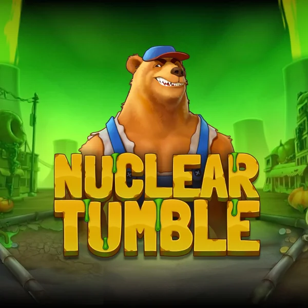

Nuclear Tumble - RTP, análise e onde jogar

| Provedor | Relax Gaming |
|---|---|
| Tipo de jogo | Caça-níquel de vídeo |
| Tema | Fazenda caótica após a radiação |
| Tipo de pagamento | Ways (sem número indicado na página oficial do jogo) |
| Aposta mínima | 0,20 euros |
| Aposta máxima | 200 euros |
| RTP | Não informado na página oficial do jogo |
| Volatilidade | Não informada na página oficial do jogo |
| Prêmio máximo | Não informado na página oficial do jogo |
| Lançamento | 29 de outubro de 2026 |
| Colaboração | CasinoGrounds |
Visão geral
Nuclear Tumble é o caça-níquel da Relax Gaming ambientado em uma fazenda caótica após a radiação, criado em colaboração com a CasinoGrounds, e a Relax anunciou o lançamento para 29 de outubro de 2026. Todos os dados desta página vêm da página oficial do jogo da Relax Gaming e do anúncio de lançamento do próprio estúdio. O protagonista é um urso musculoso que cultiva produtos gigantes com resíduos nucleares, e essa imagem marca todo o tom: uma fazenda alegre que virou radioativa.
A página do jogo descreve um jogo rápido e simples: os prêmios caem em cascata, as moedas se acumulam e os pagamentos chegam rápido e com clareza. Os pagamentos usam a mecânica Ways, sem um número fixo de linhas de pagamento indicado na página oficial, e as apostas vão de 0,20 a 200 euros. Essa é toda a especificação que a página oficial dá por enquanto, e esta página não completa as lacunas com números de sites de análise.
O recurso central do anúncio da Relax é o modo Meltdown, novo na série Tumble. Ao limpar todos os blocos, o modo é ativado: a grade fica limpa enquanto os prêmios em dinheiro continuam em jogo, e uma grade nova abre a chance de mais prêmios em dinheiro com valores maiores. Assim, um tabuleiro limpo vira uma segunda chance, e não um beco sem saída.
Uma nota honesta: a página oficial não informa tamanho da grade, RTP, volatilidade nem prêmio máximo, então esta página não os adivinha. Quando a Relax os publicar, esta página será atualizada a partir dessa fonte.
Onde jogar Nuclear Tumble
Nuclear Tumble estará disponível em cassinos online que oferecem jogos da Relax Gaming. Comece pelas nossas listas verificadas:
Nigéria | México | Quênia | África do Sul | Colômbia | Brasil
Perguntas frequentes sobre Nuclear Tumble
Quando Nuclear Tumble será lançado?
A Relax Gaming anunciou o lançamento de Nuclear Tumble para 29 de outubro de 2026.
O que é o modo Meltdown em Nuclear Tumble?
O modo Meltdown é o recurso novo que a Relax Gaming anunciou para Nuclear Tumble. Ao limpar todos os blocos, ele é ativado: a grade fica limpa enquanto os prêmios em dinheiro continuam em jogo, e uma grade nova abre a chance de mais prêmios em dinheiro com valores maiores.
Quais são as apostas e o tipo de pagamento em Nuclear Tumble?
A página oficial do jogo da Relax Gaming informa a mecânica Ways e apostas de 0,20 a 200 euros. A página não informa tamanho da grade, RTP, volatilidade nem prêmio máximo.
Quem criou Nuclear Tumble?
Nuclear Tumble é um caça-níquel de vídeo da Relax Gaming criado em colaboração com a CasinoGrounds, ambientado em uma fazenda caótica após a radiação, onde um urso cultiva produtos gigantes com resíduos nucleares.